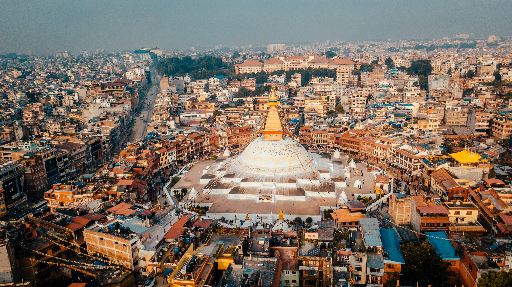

Ghorepani Poonhill trek is one of the most beautiful short trekking in Nepal offering spectacular view of Dhaulagiri and Annapurna Range of Himalayas.Ghorepani Poon Hill Trekking is mostly famous for breathtaking sunrise view on Himalayas.

Have more days to travel Nepal and want to increase the time in lap of Himalayas? Then Everest Base Camp Trek with Gokyo Lake will be perfect combination. This trekking trail will add 3 more extra days with 12 days of Everest Base Camp Trek. Gokyo Lake is sacred lake in both Hinduism and Buddhism. Here are 6 main lakes making Gokyo lakes, which is world’s highest freshwater lake system.

Annapurna Base Camp Trek is one of the most beautiful and popular trek in Nepal due to the presence of Majestic Himalayas Annapurna I (8091m, world 10th highest mountain peak), Annapurna South (7219m), Annapurna II (7937m) Annapurna III (7555m), Annapurna IV (7525m) Gangapurna (7455m) Machhaphuchre (6993m), Hiunchuli (6441m), Dhaulagiri (8167m world 7th highest mountain peak) and other peaks too

Mardi Himal base camp trek is new trekking trail, off beaten path, less touristy and one of the short trek of Nepal in the Annapurna Region. Mardi himal base camp trek offers spectacular view of Annapurna Range with beautiful landscapes.
Panoramic view of Mountains Gurja Himal (7193m), Dhaulagiri IV (7661m), Dhaulagiri V (7618m), Dhaulagiri III (7715m), Dhaulagiri II (7751m), Dhaulagiri I (8167m: 7th Highest Mountain in World), Tukuche (6,920m), Dhampus Peak (6012m), Nilgiri North (7061m), Annapurna I (8091m: 10th Highest Mountain in World), Annapurna South (7219m), Hiunchuli (6441m), Gangapurna (7455m), Machhaphuchre (6993m).
Day 1: Arrival in Kathmandu
Package Price: USD 760 per Person
(whole body
checkup before
trek
included)
Trek Duration: 4 days/ 3 days